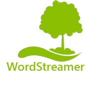
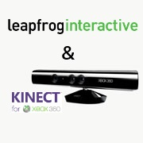
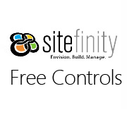

Projects
Public Projects

 open source
open source
Click ForMore Info Metro JS

For Windows Phone
Click ForMore Info
WordStreamer
For Windows Phone

Digital Out of Home
Click ForMore Info LEAP Digital Out of Home

open source
Click ForMore Info Sitefinity Controls
Click ForMore Info Archived Projects